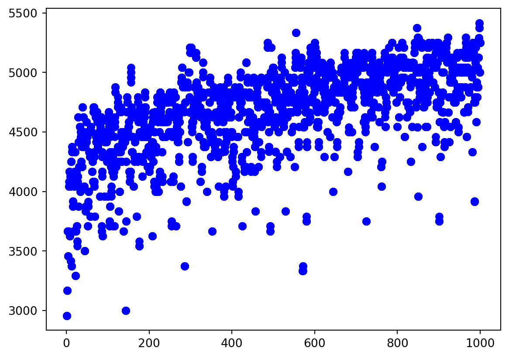

Zdefiniowana funkcja “zna” swoją nazwę (i wie dużo więcej o sobie). Poniższa funkcja ma też docstring oraz zdefinowane typy wejścia i wyjścia. Zarówno anotacje, jak i magiczne metody zaczynające się od __ pojawią się dalej na wykładzie.
W pythonie dobrą praktyką są krótkie linijki, maks 88 znaków. Łatwiej wtedy czyta się kod. Są do tego formattery, które robią to za nas. Ja polecam Ruff, dostępny jako wtyczka do VSC. Zamiast tego:
Biblioteka string posiada dużo pomocniczych opcji w zakresie napisów. Nie musimy wymieniać liter alfabetu, wystarczy użyć:
import stringprint(string.ascii_lowercase)
abcdefghijklmnopqrstuvwxyz
Przykładowe podejście do zadania 2, inne od wykładowego. Definujemy funkcję bisekcji oraz dekorator do pomiaru czasu:
import mathfrom time import perf_counter_nsimport matplotlib.pyplot as pltdef measure_time(func, repeat=1):"""Mierzy czas wykonania funkcji. Zwraca funkcję owiniętą w pętlę powtórzeń. Funkcja wynikowa zwraca listę czasów. """def worker(*args, **kwargs): times = []for _ inrange(repeat): start_time = perf_counter_ns() _ = func(*args, **kwargs) end_time = perf_counter_ns() times.append(end_time - start_time)returnsorted(times)return workerdef bisection( func, a: float, b: float, tol: float=1e-6, max_iter: float=1_000) ->float:"""Znajduje miejsce zerowe funkcji f metodą bisekcji. Args: a: Lewy koniec przedziału. b: Prawy koniec przedziału. tol: Tolerancja (dokładność). max_iter: Maksymalna liczba iteracji. Returns: Przybliżone miejsce zerowe lub None, jeśli nie znaleziono. """if func(a) * func(b) >=0:returnNone# Brak gwarancji istnienia miejsca zerowegofor _ inrange(max_iter): c = (a + b) /2ifabs(func(c)) < tol:return cif func(c) * func(a) <0: b = celse: a = creturnNone
Mierzymy czas:
import mathdef atan_minus_1(x):return math.atan(x) -1n_max =1_000repeat =1_000ns =list(range(1, n_max +1))measure_bisection_time = measure_time(bisection, repeat=repeat)time_lists = [(n, measure_bisection_time(atan_minus_1, 0.0, 10.0* n)) for n in ns]time_points = [ (float(n), time)for n, times in time_listsfor time in times[repeat //3 : -repeat //3]]
Przedstawiamy na wykresie:
import numpy as npx, y =zip(*time_points)fig, ax = plt.subplots()ax.plot(x, y, "o", color="blue")

Lista 2
W opowiastce o Alfredzie, wczytując się dokładnie, mógł on się także cofać, co oznacza przyzwolenie na ujemne rozwiązania. Przyjmowałem też rozwiązania zakładające jedynie dodatnią ilośc skoków.
Nie robimy tak:
def moja_funkcja(k):return knazwa ="moja_funkcja"wynik =eval(nazwa)(1)print(f"Funkcja {nazwa} daje {wynik=}")
Funkcja moja_funkcja daje wynik=1
Funkcja eval ma bardzo mało rozsądnych zastosowań, jest niebezpieczna, najlepiej zapomniec że istnieje. Zamiast tego:
funkcja = moja_funkcjawynik = moja_funkcja(1)print(f"Funkcja {funkcja.__name__} daje {wynik=}")
Funkcja moja_funkcja daje wynik=1
Staramy się o czyste i jasne importy z modułów. Możemy robić tak:
from math import ceil, gcd, lcmprint(lcm(gcd(10, 6), ceil(10/3)))
from math import lcm, ceilimport mathprint(lcm(math.gcd(10, 6), ceil(10/3)))
Nigdy nie robimy tak:
from math import*
Lista 3
W funkcji liczby_zaprzyjażnione można użyć cachowania aby dla każdej liczby liczyć jej sumę dzielników tylko raz.
def liczby_zaprzyjaźnione(N): liczby = [] sumy_dzielników = [0] * (N +1)for a inrange(2, N): b = suma_dzielników(a) sumy_dzielników[a] = bif b < a:if sumy_dzielników[b] == a: liczby.append((a, b))return liczby
Iterując po obiekcie, chcąc znać indeks na ktorym jesteśmy używamy enumerate.
lista = ["a", "b"]# nie robimy taklicznik =0for litera in lista:print(f"{licznik}: {litera}") licznik +=1# tylko takfor licznik, litera inenumerate(lista):print(f"{licznik}: {litera}")
0: a
1: b
0: a
1: b
Sito Eratostenesa da się znacząco przyśpieszyć implementując je w NumPy.
import numpy as npimport timedef sito_listowe(limit):""" Implementacja sita Eratostenesa przy użyciu list. """if limit <2:return [] kandydaci =list(range(limit)) kandydaci[0] =None kandydaci[1] =Nonefor liczba in kandydaci:if liczba isNone:continueif liczba * liczba >= limit:breakfor wielokrotnosc inrange(liczba * liczba, limit, liczba): kandydaci[wielokrotnosc] =Nonereturn [liczba for liczba in kandydaci if liczba isnotNone]def sito_numpy(limit):""" Implementacja sita Eratostenesa przy użyciu biblioteki NumPy. """if limit <2:return np.array([], dtype=int) czy_pierwsza = np.ones(limit +1, dtype=bool) czy_pierwsza[0:2] =Falsefor p inrange(2, int(np.sqrt(limit)) +1):if czy_pierwsza[p]: czy_pierwsza[p * p :: p] =Falsereturn np.nonzero(czy_pierwsza)[0]# Funkcja do pomiaru czasu wykonania z powtórzeniami i wyborem minimalnego czasu.def mierz_czas_sita(funkcja, limit, nazwa_funkcji, powtorzenia=10):""" Mierzy czas wykonania danej funkcji sita Eratostenesa. """ czasy = []for _ inrange(powtorzenia): czas_start = time.time() wynik = funkcja(limit) czas_koniec = time.time() czasy.append(czas_koniec - czas_start) minimalny_czas =min(czasy)print(f"{nazwa_funkcji} (limit={limit}):")print(f" Minimalny czas ({powtorzenia} uruchomień): {minimalny_czas:.6f} sekund")print(f" Liczba liczb pierwszych: {len(wynik)}")# Przykładowe użycie i pomiar czasulimit =10_000_000print("Pomiar czasu z limitem =", limit)mierz_czas_sita(sito_numpy, limit, "Sito NumPy (zoptymalizowane)")mierz_czas_sita(sito_listowe, limit, "Sito Listowe")
Pomiar czasu z limitem = 10000000
Sito NumPy (zoptymalizowane) (limit=10000000):
Minimalny czas (10 uruchomień): 0.017430 sekund
Liczba liczb pierwszych: 664579
Sito Listowe (limit=10000000):
Minimalny czas (10 uruchomień): 1.042613 sekund
Liczba liczb pierwszych: 664579